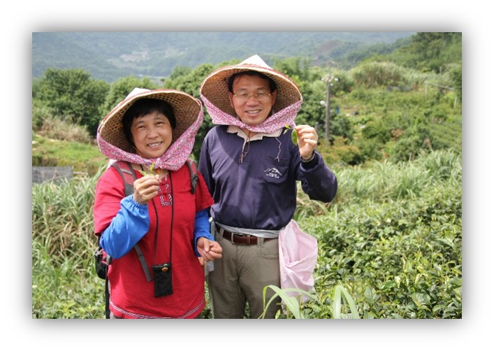
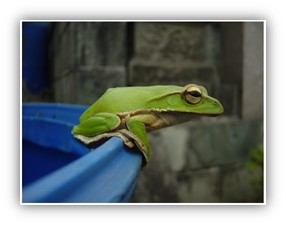
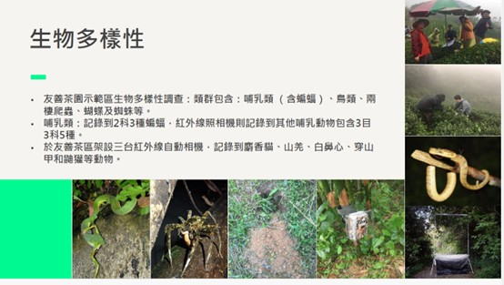

在全球企業強調 ESG（環境、社會、治理）的今天，永續行動不再只是企業的承諾，而是每一位員工都能參與的日常選擇。公司近期將展開一項特別的計畫——支持坪林的有機茶園，這不僅是一杯好茶的故事，更是我們守護水源、保護生物多樣性與照顧農民的重要行動。
|  |
 |
🌱 環境責任：守護翡翠水庫的源頭
坪林位於北勢溪上游，是翡翠水庫的重要集水區，承載著大台北數百萬居民的飲水安全。然而，過去茶園普遍依賴農藥、化肥與除草劑，這些化學物質會隨雨水流入河川，影響水質與水庫壽命。當茶農改為有機耕作，不使用化學藥劑，土壤逐漸恢復健康、泥沙淤積減少，水質也能更純淨。這不僅對環境有益，更是對所有人健康的守護。
🐸 生物多樣性：讓生命回到茶園
有機耕種方式讓自然逐漸回到茶園，坪林如今成為一個「會呼吸的茶鄉」。在這裡，我們再次聽見鳥鳴、看見昆蟲飛舞，甚至發現了珍稀的野生動物蹤跡——翡翠樹蛙：對水質極度敏感，被譽為「生態健康指標」。牠們重新出現在茶園水桶與植被間，代表環境的潔淨度已大幅提升。
|  |
• 穿山甲：夜晚悄悄進入茶園翻土找蟻，成為自然的「除蟲專家」。
• 食蟹獴與山羌：穿梭於茶園周邊，象徵完整棲地的恢復。
• 蝙蝠：在有機茶園裡觀測到的數量是慣行茶園的兩倍以上，不僅是生物多樣性的重要指標，也是天然的防蟲好幫手。
• 鳥類、昆蟲、爬蟲與蜘蛛：根據調查，坪林有機茶園周邊可發現超過 100 種鳥類、100 多種昆蟲，以及50–60種兩棲爬蟲與蜘蛛，生 態豐富度遠勝一般茶區。
這些物種不僅是大自然的陪伴者，更與茶園形成 互利共生的循環：野草與昆蟲吸引鳥類，降低茶樹蟲害。蝙蝠、青蛙與天敵昆蟲取代化學農藥，維護茶園生態平衡。植被覆蓋保護土壤，避免雨季沖刷泥沙入庫。簡單的一片茶園，卻成為支持水源、涵養生態的重要據點。
 |
|  |
👨🌾 社會關懷：陪伴農民的轉型之路
轉型為有機耕種，對農民來說並不容易。產量下降、病蟲害加劇、除草人力需求倍增，這些挑戰往往讓人卻步。
公司將透過認養有機茶，為農民提供三大支持：
• 保障收購：減少銷售壓力，讓農友能安心專注於耕作。
• 資源協助：推廣有機肥使用，減緩農民的轉型成本。
• 長期合作：承諾與農友共度轉作初期的艱難，建立永續夥伴關係。
這不只是茶葉產業的升級，更是「供應鏈共好」的最佳示範。
📊 治理實踐：將永續融入企業藍圖
ESG的核心是長期承諾與透明治理。支持坪林有機茶園，是公司將永續理念落實到地方的具體行動。這項計畫與我們的永續藍圖緊密呼應：
E（環境）：減少化學藥劑，守護水源與土地。
S（社會）：支持在地農友，促進地方經濟發展。
G（治理）：以長期合作模式，確保計畫透明、可持續發展。
這代表我們的ESG不只體現在工廠管理、國際評比或報告書上，而是真實地影響到台灣土地與社會。
🍵 一杯茶的力量：邀請員工一起參與
當我們舉起茶杯時，喝下的不只是清香與甘甜，更是一份對環境、社會的承諾。未來，公司也將規劃更多員工參與活動，例如：
• 參訪坪林茶園，親身感受生態之美；
• 推廣綠色飲食，從日常消費支持永續農業；
我們相信，只要點亮一盞燈，就能照亮更多人。坪林的有機茶園只是開始，未來我們將持續把這份綠色力量傳遞出去，讓更多同仁、更多社會大眾一同加入永續行列。守護水庫，保護生態，支持農民。這是一條知易行難的道路，但每一個選擇都能成為改變的起點。讓我們一起舉杯，喝下的不僅是一口茶香，更是一份對土地的深情承諾。